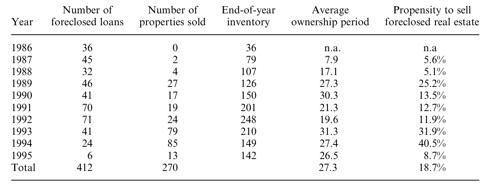
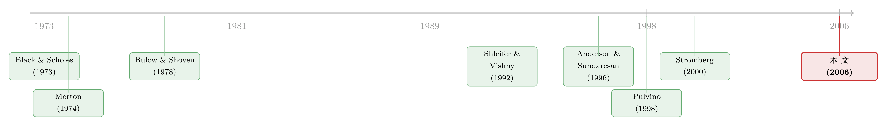

止赎来的那栋楼，银行为什么按着不卖？——把「战略违约」和「火线甩卖」装进同一盘棋
本文读的是 Brown, Ciochetti & Riddiough (2006, Review of Financial Studies)：他们用一个「业主自营项目」的博弈模型证明，借款人是否违约、出借人是重组还是止赎、止赎后又何时卖楼，全都被项目价值与行业流动性这两件事的交互所决定；并用一家大型保险公司六百多笔困境商业地产贷款验证了这套逻辑——萧条年份违约最多、却也最难卖楼，而止赎资产平均以 20%–30% 的折价成交。
1 一个让人别扭的悖论
先说一件违反直觉的事。
商业地产的世界里，有一段众所周知的剧情：1980 年代末到 1990 年代初，美国商业地产价值断崖式下跌，违约、止赎成片出现。按常理推断，出借人（lender）拿到这些止赎来的楼盘，总该想尽快脱手回血才对。可数据偏偏说不是这样——违约和止赎最密集的那几年，恰恰是楼最卖不出去的那几年。等到 1993、1994 年市场回暖、买家排着队来了，违约反而少了，重组（restructuring）却多了。
这就奇怪了。如果止赎是出借人「想要」的结果，那为什么它偏偏扎堆出现在出借人最不想卖、也最卖不掉的时候？如果重组对双方都更好，那为什么要等到楼好卖了才肯重组？
本文（下称 BCR）的全部工作，几乎都是为了把这个悖论讲圆。而他们给出的答案，归根结底只有一句话：别把违约、止赎、卖楼当成三件独立的事——它们是同一盘棋里被同一只手摆出来的三步。借款人之所以在最糟的年份大举违约，正是因为他「算准了」此时出借人卖不掉楼；而出借人之所以按着楼不卖，正是因为他「算准了」行业马上要重新积累资本。一旦把这条预期链打通，悖论就不再是悖论。
下面我们就顺着这条链，一步步走。
2 模型设定：一个「没人愿意好好干活」的项目
首先要交代这是一篇理论 + 实证的论文，理论模型是骨架，所以值得把它一节一节拆开看。
考虑一个由业主自营（owner-managed）的项目：业主出股权，外部出借人出债。债务以项目本身作抵押，业主只承担有限责任。所有人风险中性，无风险利率为零。债务合同要求在 \(t=0\) 付 \(P_0\)、在 \(t=1\) 付 \(P_1\)。
项目初始价值为 \(V\)，随后遭到一个大小为 \(B\) 的负向冲击（这就是「弱经济」）。如果项目成功，\(t=1\) 的现金流是 \(V-B>0\)；如果失败，现金流是 \(0\)。项目成不成功是随机的，成功概率为 \(r\)，而这个 \(r\) 由业主自己的努力决定——努力是不可缔约的（noncontractible）。努力有成本 \(C(r)\)，凸增。为简化，设 \(C_i(r)=b_i r^2\)，下标 \(i=1\) 表示在任业主、\(i=2\) 表示外部买家，\(b_i\) 越大表示这个人管这个项目越「费劲」、效率越低。
这里藏着全篇的微观引擎：激励问题。业主努力与否，直接决定项目死活，但努力又观察不到、写不进合同。当业主的股权被冲击 \(B\) 削得很薄时，他成功了大头归债主、失败了反正有限责任，于是他干脆躺平——这就是经典的债务积压（debt overhang）下的投资不足。
接着，一个自然的问题是：业主到底会投入多少努力？给定 \(t=1\) 到期的债务额 \(F\)，业主的期望收益是 \(r[V-B-F]-C(r)\)，对 \(r\) 求一阶条件，立刻得到论文的方程 (1)：
$$ r_i(F) \;=\; \frac{V-B-F}{2\,b_i} $$
直觉很干净：业主的努力，正比于「成功时他能拿到的那块残值」\(V-B-F\)，反比于他的管理「费劲程度」\(b_i\)。债务 \(F\) 压得越狠，分子越小，他越不肯干活。这就解释了为什么困境工作流要靠「债务减记」而不是「债转股」——你给债主塞一块股权，并不能把业主的残值索取权变厚，激励一点没改善；只有真金白银地把 \(F\) 砍下来，业主才会重新卖力。
这也顺带解释了一个实证上的「巧合」：本文样本里的重组全都是债务写减（write-down），没有债转股。在这个框架里，债转股根本无法恢复激励，所以它本就不该出现。
3 出借人的两条路：重组，还是止赎？
现在违约已经发生，球到了出借人脚下。他有两条路。
第一条路：重组。 出借人做一个「要么接受、要么走人」（take-it-or-leave-it）的报价，给业主一个新的到期债务额 \(F_1\)，目标是最大化自己的回收 \(r_1(F_1)F_1\)，约束是业主愿意留下来（参与约束）。把 (1) 代进去对 \(F_1\) 求最优，得到论文的方程 (4)、(5)：
$$ F_1^{*}=\frac{V-B}{2},\qquad r_1(F_1^{*})=\frac{V-B}{4\,b_1} $$
于是出借人在重组里能拿到的回收是
$$ r_1(F_1^{*})\,F_1^{*}=\frac{(V-B)^2}{8\,b_1}. $$
注意这里有个微妙的地方：参与约束不紧——业主在重组后保留了一大块项目租金。换句话说，出借人没法在重组里把蛋糕全切走，激励问题的「修复费」大头被业主吃掉了。正是这个「切不干净」，给止赎留下了动机。
第二条路：止赎并卖给外部买家。 一个手里有财富 \(W\)、效率参数为 \(b_2\) 的外部业主，可以用「自有财富 + 对项目的举债能力」来买这栋楼。他能借到的最大债务，正是新业主经营下的项目租金 \(\frac{(V-B)^2}{8b_2}\)。于是，外部买家愿意出的价超过出借人重组所得，当且仅当满足论文的方程 (6)。这是全篇最核心的一道不等式，把它的每一块掰开看：
把它整理一下，就是论文的 Proposition 1：外部买家愿意出价高于重组回收，当且仅当
$$ W \;\ge\; \overline{W}=\operatorname{Max}\!\left\{\frac{(V-B)^2}{8}\!\left(\frac{1}{b_1}-\frac{1}{b_2}\right),\,0\right\}. $$
这道阈值漂亮在哪？它把「止赎 vs 重组」这个看似制度性的选择，化简成两个数的较量：外部买家的财富 \(W\)，以及他相对在任业主的管理效率 \(b_2-b_1\)。
- 如果外部买家更能干（\(b_2
- 如果外部买家更差（\(b_2>b_1\)），那就要看他「钱够不够多」来补偿管理上的损耗：财富门槛 \(\overline{W}\) 随效率差 \(b_2-b_1\) 上升。
- 如果外部买家差得离谱（\(b_1<2b_2/3\)），那无论他多有钱，出借人都宁可重组。
但真正关键的一步在于：这里只有一个债主。在 Bulow & Shoven (1978) 和 Stromberg (2000) 那类模型里，银行之所以倾向清算，是因为重组的好处会被「转移」给其他债权人；而 BCR 证明，哪怕只有一个债主、没有任何债权人之间的协调摩擦，低效清算依然可能发生——原因就在第 2 节那个「切不干净」：重组的租金大头归了业主，出借人捞不回来，于是只要外面有个又有钱又能干的买家肯分他一杯羹，他宁可把楼卖掉。这是本文相对 Shleifer & Vishny (1992) 的一个独立机制：在 SV 里，富买家之所以买困境资产，是因为他自己债务积压轻、投资激励好；在 BCR 里，出借人本可以靠重组直接修好借款人的激励，他之所以还要卖，是因为只有足够能干又有钱的外部人，才愿意为「修激励」这件事付钱给他。
4 那为什么不立刻卖？——一栋楼的「待价而沽」
模型走到这里，还差最后一块拼图：时间。
出借人止赎之后，并不是只能马上卖。他可以把楼先扛在自己账上（in-house），等行业重新积累资本——也就是等 \(W\) 变大、买家变多、竞争变激烈——再卖个好价钱。代价是，扛楼是有成本的：出借人不是经营专家，楼在他手里只会越管越糟。
于是「何时卖」本身变成一个最优停时问题：当外部买家池子很强时，立刻卖，因为等下去也没多大改善；当池子很浅、深口袋投资者还没出现时，出借人宁可承担扛楼的成本，赌一个不远的将来更高的售价。
这恰恰把第 1 节的悖论解释了一半——萧条期止赎资产卖得慢，不是因为出借人不想卖，而是因为此时 \(W\) 太低，等下去的期权价值压过了立刻甩卖。这一点和 OTC 市场里「价格折扣其实是在为『找到买家所需的时间』定价」的思路如出一辙（关于这一点，可参见《价格里那道折扣，量的是「找不到买家」的时间》）。
5 反转：违约本身是「算」出来的
悖论的另一半，要靠内生违约（endogenous default）来补。
到目前为止我们都假设违约已经发生。但模型的第一步其实在更前面：业主在 \(t=0\) 决定违不违约时，会先把后面整盘棋——会被重组还是被止赎、止赎后能拿回多少——全部往前推演。
于是反转出现了：
- 在萧条的最深处，外部买家又穷又少（\(W\) 极低），出借人本来更愿意重组。但同样是这个萧条，把项目价值砸出一个巨大的 \(B\)，使得业主的股权几乎清零——此时违约就像行使一个看跌期权（put option），业主干脆「弃楼走人」。所以即便出借人想重组，止赎率依然高企，因为太多借款人主动违约把楼扔了回来。这正是 Black-Scholes (1973)、Merton (1974) 传统里「违约即期权最优行权」的那一面。
- 在复苏期，延续价值（continuation value）回升，业主手里的股权重新变得值钱，他只在预期能换来一次重组、拿到债务减免时才会「战略性」违约。于是违约变少、重组变多。
把这两段合起来，第 1 节那个「违约扎堆在最难卖楼的年份」的悖论就彻底化解了：它几乎无法用外生违约来解释，却能被内生违约自然地推出来。这也是 BCR 区别于既有战略违约文献（Anderson & Sundaresan 1996；Mella-Barral & Perraudin 1997；Fan & Sundaresan 2000）的地方——在那些模型里，战略违约的动机来自交易成本和税收；而在这里，战略违约的强度随潜在买家的财富起伏，是行业流动性的一个函数。
6 数据与识别
讲完模型，来看证据。
本文用的是一家大型保险公司（permanent commercial real estate loans 的主要供给方）的内部数据：600 多笔陷入财务困境的商业地产资产，时间横跨一次严重下行与随后的反弹。这些资产几乎全是业主自营、且以单一抵押贷款融资——这一点很重要，因为它正好对上了模型里「单一债主、无债权人协调问题」的设定。作者还论证了样本在融资、合同与抵押品特征上代表更广的商业按揭市场。
数据能直接看到：贷款最终是被重组还是止赎、以及从止赎到卖楼之间隔了多久。识别的思路是用横截面 + 时变的代理变量去对应模型里的三个原始量——项目价值冲击 \(B\)、行业/买家财富 \(W\)、以及资产的管理专用性（management specificity，对应 \(b\) 的差异）——然后看重组—止赎决策和卖楼时机是否如模型所预测的那样随它们变化。
7 主要结果：四个数字
(1) 卖楼时机随行业流动性走。 在下行最糟的年份，出借人每年只卖掉止赎库存的约 12%；而到 1993、1994 年行业进入持续复苏时，分别卖出年初库存的 32% 和 40%。而且后一段时期售出资产的平均库存时间更长——因为卖的正是当年在萧条里收进来、一直压着没卖的那批楼。比例风险模型（proportional hazards）进一步给出横截面证据：写字楼（遭受的行业冲击尤其严重）卖得比公寓（冲击小得多）慢。

Table 6: documents foreclosure and foreclosed sales activity over 1986–1995. The average ownership
(2) 火线甩卖的折价随市场条件变。 止赎资产平均以相对基本面价值 20%–30% 的折价成交，且这个 firesale discount 随止赎时点的市场条件变化——萧条期止赎的资产，折得更狠。这与 Pulvino (1998) 在商用飞机上、Brown (2000) 在 REITs 上记录的「行业流动性—资产价值」关系互为呼应。
(3) 重组—止赎的 logit。 把「重组 vs 止赎」回归到对 \(B\)、行业财富、管理专用性的代理变量上，结果与模型方向一致：条件于违约，重组的概率与项目价值冲击的大小负相关、与止赎资产市场的强弱负相关、与资产的管理专用性正相关。翻译成大白话——冲击越大、外面越好卖、楼越「谁来管都一样」，就越容易被止赎；反之，楼越「换个人就管不好」，就越容易被重组留给在任业主。
(4) 业主确实在「省维护」。 数据还记录了出借人在卖楼前为修缮、重新定位楼盘投入的资本性支出——这家出借人的 capex 是典型非困境业主的 3 到 4 倍，反过来说明困境借款人在违约前严重压低了对物业的维护投入。这与 Asquith, Gertner & Scharfstein (1994) 关于「企业在财务困境后削减资本支出」的证据相互印证。
8 模型的一个小注脚：为什么是「外部债」而不是「外部股」
值得单独点一句模型里一个容易被略过、却很优雅的论证。
既然激励问题来自「业主拿不到全部残值」，那为什么一开始还要引入外部融资、还要选债而非股？BCR 的回答是：当外部资本提供方持有优先索取权（senior claim）、而业主是唯一的剩余索取人（sole residual claimant）时，融资带来的努力扭曲被降到最低——业主在成功时拿走边际上的每一块钱，激励最强。这也是为什么样本里看不到外部股权、看不到债转股。作者把这件事挂靠到 Innes (1990) 与 Dewatripont, Legros & Matthews (2002)：在风险中性、道德风险的环境里，外部债融资在相当一般的条件下是最优的。
9 文献脉络
把这条线索捋一捋，BCR 站在三股研究的交汇处。
第一股是「违约即期权」。 Black & Scholes (1973) 与 Merton (1974) 奠定了把公司债、把违约看成期权的传统——股东持有的是一份对资产的看涨期权，违约则是最优行权。本文萧条期那一半「弃楼走人」的故事，正是这一传统的直系后裔。
第二股是「条件于违约的清算 vs 重组」。 Bulow & Shoven (1978) 最早把「破产决策」拆成清算还是重整，但其中延续价值是外生的；Stromberg (2000) 把它内生化，并指出银行因为重组的好处会被转移给其他债权人，而有清算冲动。BCR 的贡献在于：去掉「多债权人」这个拐杖，证明哪怕只有一个债主，低效止赎照样能发生。
第三股是「行业流动性与资产价值」。 Shleifer & Vishny (1992) 给出富买家收购困境资产的均衡逻辑；Pulvino (1998)、Brown (2000) 用飞机和 REITs 提供了 firesale 折价的硬证据。BCR 把这股流动性的力量，通过买家财富 \(W\)，直接焊进了违约与卖楼时机的决策里。

至于战略违约这一支（Anderson & Sundaresan 1996；Mella-Barral & Perraudin 1997；Fan & Sundaresan 2000），BCR 的位置是：把战略违约的强度从「交易成本/税收」改写成「行业流动性的函数」。一句话——本文的独特性，全在那个把项目价值与买家财富乘在一起的交互项上。
10 评论与延伸（Q&A + 研究方向）
Q：这和普通的「战略违约」模型到底差在哪？
差在违约动机的来源。在 Anderson-Sundaresan、Fan-Sundaresan 那类模型里，借款人战略违约是为了利用债务重谈中的交易成本或税盾；BCR 里，战略违约的「划算程度」直接取决于外部买家有多有钱（\(W\)）和多能干（\(b_2\)）。萧条期 \(W\) 低、出借人卖不掉楼、重谈筹码弱，于是违约从「战略性套取减免」滑向「期权式弃楼」。同一个违约动作，在不同流动性环境下是两种性质。
Q：「只有一个债主仍会低效清算」这个结论，可信吗？会不会是模型设定凑出来的？
它不靠债权人协调失败，而靠一个很硬的激励事实：重组要恢复业主努力，就必须把一大块租金让给业主（参与约束不紧），出借人自己捞不回这块。于是只要外面有人肯为「修激励」付费，止赎就有了动机。这个机制不依赖多债主，逻辑上是自洽的；当然它依赖「业主是唯一剩余索取人、努力不可缔约」这组设定，换一套契约环境结论可能就变了。
Q：那个「20%–30% 折价」是怎么算出来的？会不会只是基本面本身在跌？
关键在于折价是相对基本面价值度量的，而且它随止赎时点的市场条件系统性变化——萧条期止赎折得更深，复苏期更浅。如果只是基本面在跌，折价不该随流动性环境呈现这种横截面/时序模式。不过这条识别确实依赖「基本面价值」估得准，这是这类研究共同的软肋。
Q：违约率最高的年份卖楼最难，这难道不是同一件坏事的两面，何必扯上内生违约？
恰恰相反，这正是内生违约最有力的证据。如果违约是外生的，你很难解释为什么借款人偏要在出借人最不愿意/最没能力惩罚他（卖不掉楼）的时候大举违约——这需要借款人「算到」了出借人的处境。把借款人的违约决策内生化，这个时序就自然落位了。
Q：样本来自单一一家保险公司，结论能外推吗？
这是最实在的担忧。好处是单一出借人 + 单一抵押贷款的结构干净地对上了模型；代价是这家机构的处置策略、风控偏好可能不代表银行或 CMBS 渠道。作者用样本在合同/抵押品特征上的代表性做了辩护，但「处置行为的代表性」终究难以完全证伪。
Q：模型把利率设为零、风险中性，丢掉利率风险，会不会太干净？
对定性结论（违约—重组—止赎—时机的排序如何随 \(B\)、\(W\) 变化）影响不大，因为驱动力是激励与流动性，不是贴现。但要把它搬到 2008 这种利率与信用同时剧烈波动的环境，缺了随机利率和风险溢价，定量上肯定不够用——这正好是后续可做的方向。
接下来是几个由本文自然引出的研究问题。
(1) 把这套「业主—出借人」逻辑搬到公司债的困境处置上。 【经济故事】BCR 的核心——重组 vs 清算取决于「项目价值 × 行业买家流动性」——在公司层面同样成立：同一行业里同时陷入困境的公司越多，潜在收购方越穷，债主越该「按着不卖」。这能给「行业层面的火线甩卖」提供一个内生择时的预测。 【可行性】中。需要 Moody's/S&P 违约与回收数据、行业层面的并购/资本充裕度代理；识别上可借「同行业同时违约的密度」作为 \(W\) 的逆向代理，但内生性（行业冲击同时打击 \(B\) 和 \(W\)）需要小心处理。
(2) 外资买家作为「深口袋」如何改变困境资产的处置时机。 【经济故事】模型里的 \(W\) 是抽象的买家财富。现实中，当本土买家枯竭时，跨境/外资 PE 往往是那个「深口袋」。外资进入应当缩短止赎资产的库存时间、抬高回收率——这把行业流动性和外资持有人两条线接上了。 【可行性】中。商业地产可用 RCA（Real Capital Analytics）逐笔成交 + 买家国籍；识别可利用资本账户开放或汇率冲击带来的外资可得性变化。难点是把「外资可得性」与本地基本面分开。
(3) firesale 折价里「时间」与「议价」的分解。 【经济故事】20%–30% 的折价里，多少是「等不起、被迫现在卖」（流动性时间成本），多少是「买家少、议价权外流」？这正好对应 OTC 搜寻模型里时间与议价的两块。把困境地产的折价做这种分解，能直接检验本文「扛楼期权」与 SV 议价机制谁更重要。 【可行性】中偏低。需要资产层面的挂牌时长、报价轮次数据，这类微观数据极难获得；可在有挂牌平台数据的住宅止赎市场先做原型。
(4) 把内生违约写进 CMBS 的提前还款/违约建模。 【经济故事】CMBS 定价长期把违约当外生 hazard 处理。BCR 说违约时点是借款人对「将来会被怎么处置」的最优反应。若把处置预期（行业流动性的前瞻指标）放进违约强度，应能改善困境期的定价（可呼应《差点和次贷一起被埋葬的那个市场：商业地产衍生品的危机定价》）。 【可行性】高。CMBS 贷款级数据（如 Trepp）可得，违约/处置时点可观测，行业流动性前瞻指标可构造；是较 doable 的一个方向。
11 我的判断
先说贡献。这篇论文最漂亮的地方，是把三件长期被分开研究的事——借款人违约、出借人重组/止赎、止赎资产何时卖——用一个交互项（项目价值 × 买家财富）串成一条因果链，并且只用一个债主就复现了「低效清算」，干净地与 Bulow-Shoven、Stromberg 的多债主机制区分开来。更难得的是，它不是一篇纯理论：那个「违约扎堆在最难卖楼的年份」的悖论，用外生违约几乎讲不通，却被内生违约自然推出，理论与数据在这一点上扣得很紧。把困境处置同时镶进「期权」和「流动性」两个传统，这是它真正的位置。
再说担忧。第一，识别终究是相关性而非随机化——\(B\)、\(W\)、管理专用性都是代理变量，且很可能内生地共同被行业冲击驱动，文中的 logit 与 hazard 更多是「与模型方向一致」，而非排他性的因果证据。第二，单一出借人样本的代表性，对处置行为这种高度依赖机构策略的变量尤其敏感。第三，模型为了可解把利率、风险溢价都抽掉了，定量外推到危机期会吃力。
后续我最想看到的，是把这套逻辑搬到有外生流动性冲击的环境里去做一次更硬的识别——比如用一次外资准入放开、或一次区域性资本充裕度的外生变化，去检验「买家财富 \(W\) 上升是否真的同时降低止赎率、缩短库存时间、抬高回收」。如果这条因果能被钉死，BCR 这个 2006 年的框架，会在今天的私募信贷与 CMBS 市场里重新焕发价值。
参考文献
Anderson, R., and S. M. Sundaresan (1996). Design and Valuation of Debt Contracts. Review of Financial Studies 9(1), 37–68.
Asquith, P., R. Gertner, and D. Scharfstein (1994). Anatomy of Financial Distress: An Examination of Junk Bond Issuers. Quarterly Journal of Economics 109(3), 635–658.
Black, F., and M. Scholes (1973). The Pricing of Options and Corporate Liabilities. Journal of Political Economy 81(3), 637–654.
Brown, D. T., B. A. Ciochetti, and T. J. Riddiough (2006). Theory and Evidence on the Resolution of Financial Distress. Review of Financial Studies 19(4), 1357–1397.
Brown, D. (2000). Liquidity and Liquidation: Evidence from Real Estate Investment Trusts. Journal of Finance 55(1), 469–485.
Bulow, J. I., and J. B. Shoven (1978). The Bankruptcy Decision. Bell Journal of Economics 9(2), 437–456.
Dewatripont, M., P. Legros, and S. Matthews (2002). Moral Hazard and Capital Structure Dynamics. Working paper, Penn Institute for Economic Research.
Fan, H., and S. M. Sundaresan (2000). Debt Valuation, Renegotiations and Optimal Dividend Policy. Review of Financial Studies 13(4), 1057–1099.
Innes, R. (1990). Limited Liability and Incentive Contracting with Ex-Ante Action Choices. Journal of Economic Theory 52(1), 45–67.
Mella-Barral, P., and W. R. M. Perraudin (1997). Strategic Debt Service. Journal of Finance 52(2), 531–556.
Merton, R. (1974). On the Pricing of Corporate Debt: The Risk Structure of Interest Rates. Journal of Finance 29(2), 449–470.
Pulvino, T. (1998). Do Asset Fire Sales Exist? An Empirical Investigation of Commercial Aircraft Transactions. Journal of Finance 53(3), 939–978.
Shleifer, A., and R. Vishny (1992). Liquidation Value and Debt Capacity: A Market Equilibrium Approach. Journal of Finance 47(4), 1343–1365.
Stromberg, P. (2000). Conflicts of Interest and Market Illiquidity in Bankruptcy Auctions: Theory and Tests. Journal of Finance 55(6), 2641–2692.